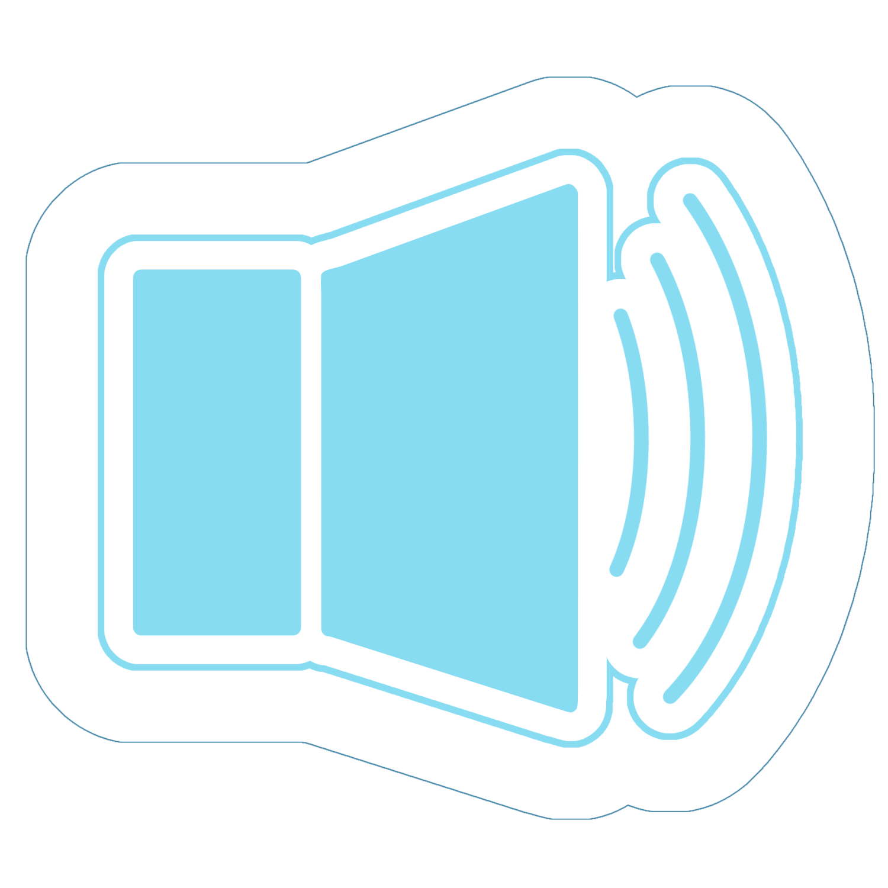
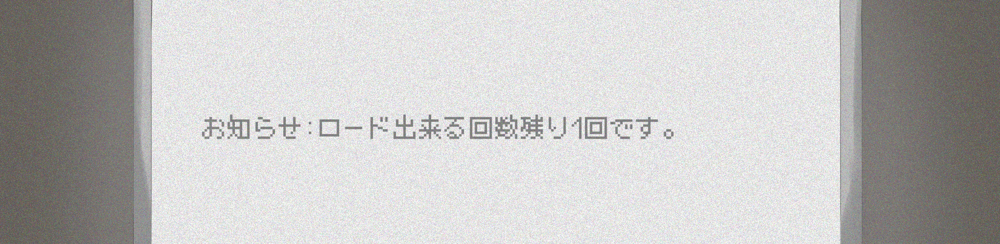
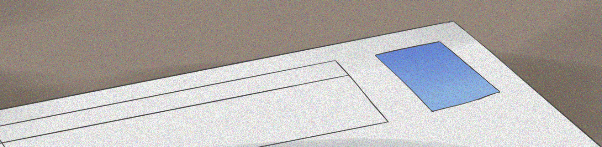

今日は何も手につかなかった。

未だに信じられない。受け入れられない。ロードがあと１回だなんて。
寝ぼけて見間違い・・・じゃない？いや違うよね。自分も完全に覚醒してたし、何回読んでもあと１回って。
嘘でしょ？あと１回しかできないの？なんで急にそんなこと。
言いたいことが山ほどある。まずロードに回数制限なってあったのか？知らなかった。そんなのどこにも書いてなかったはず。
あぁだめだ。混乱してて思考がまとまらない。ええと、つまりやり直せる回数もあと１回。
あぁもう現実逃避始めちゃいそう。
この日は、また就活の話があったんだ。１回聞いた内容なのに全くの別物に感じた。当初考えていた、数打てばあ当たるという作戦が遂行できなくなったからだ。
やり直しがあと１回しかできない。就活なんて楽勝だと思ってたけど、これは非常にまずい。
余裕ぶっこいてたおかげで全く準備をしていない。履歴書も、面接練習も、何にもやってない。話すら聞いてなかった。本当にまずい。

何やってたんだよ自分。まさかこんなことになるとは思っていなかった。いかに自分が軽率だったか思い知らされる。
今１１月・・・就活は４年の春から始まるから、かなり出遅れることになるな。間に合うか？
はぁ、もうホントになんで課題出し忘れなんてしたんだ。しっかり管理しといてよ。・・・まぁ自分が悪いんだけど。後悔先に立たず、か。
もっとしっかり考えておくべきだったな。自分の将来のことなんだし。・・・まぁあと１回ある。最悪どうにかなるかもしれないね。